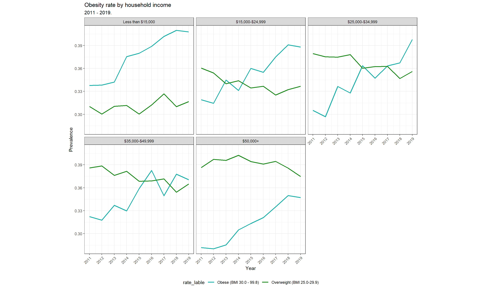

According to overview, Nebraska owns the highest rate of overweight and obese. From the line plot, we can see the prevalence of overweight decreased slightly while the prevalence of obese increased significantly over year. The total rate of people whose BMI is greater than 25 reaches almost 70% (rate of obese is 36%) in 2019.
| Race/Ethnic | Obesity rate |
|---|---|
| American Indian or Alaskan Native, non-Hispanic | 0.4713 |
| Black, non-Hispanic | 0.4181 |
| Multiracial, non-Hispanic | 0.3974 |
| Other, non-Hispanic | 0.3668 |
| Hispanic | 0.3555 |
| White, non-Hispanic | 0.3195 |
Combining data from 2011 through 2019, non-Hispanic American Indian or Alaskan Native had the highest prevalence of self-reported obesity (47.13%), followed by non-Hispanic Black adults (41.81%) and
non-Hispanic Multiracial(39.74%). Non-Hispanic White adults own the lowest obesity rate(31.95%).
According to the plot, the obesity rate of both women and men kept increasing over year and exceeded 0.35 since 2018. However, obesity rate of women always significantly lower than that of man.
-College graduate:College graduates
-H.S. or G.E.D: High school graduates or people pass General Educational Development test
-Less than H.S: People didn’t attend high school
-Some post-H.S: Any school or specialized training which takes place after high school graduation
Less than H.S < H.S. or G.E.D< Some post-H.S < College graduate.The pie plot shows that the rate of College graduate, H.S or G.E.D and Some post-H.S are all around 30%, and the rate of Less than H.S is 6%. According to the line plot, the obesity rate of all groups kept increasing over year. College graduate group always owns the lowest obesity rate, which might benefit of their self-discipline. Less than H.S group owns the highest obesity rate, however, the rate dropped dramatically between 2018 and 2019. The lines of Less than H.S group, Some post-H.S group, and H.S or G.E.D group intersects. From the trend, we assume that Obesity approximately decreased by level of education. ## Obesity rate trend of income

From the plots, we can see people with lower household income tend to have higher obesity rate and lower overweight rate. The overweight rate decreased while obesity rate increased over time.